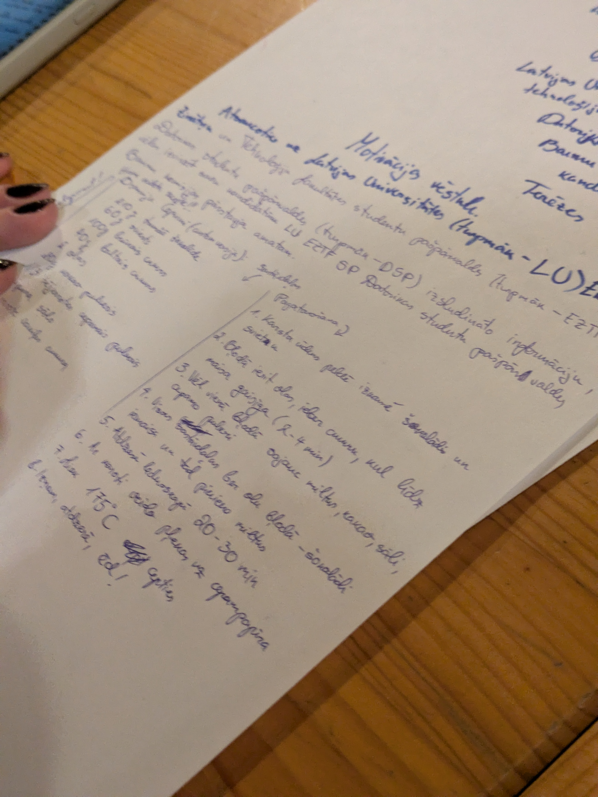

Algoritmu teorija
Kurss, kas man sagādā vislielāko uztraukumu. Kaut arī šis priekšmets man jau skaitās kā nokārtots, darba apjoms, kas nepieciešams mājasdarbu pildīšanai un lai sagatavotos eksāmenam ir masīvs.

Kurss, kas man sagādā vislielāko uztraukumu. Kaut arī šis priekšmets man jau skaitās kā nokārtots, darba apjoms, kas nepieciešams mājasdarbu pildīšanai un lai sagatavotos eksāmenam ir masīvs.
Viens no maniem mīļākajiem kursiem šajā semestrī. Tīmekļu dizains ne tikai sakrīt ar manām interesēm, bet praktiskie darbi ir vieni no interesātākajiem visā manā studiju gājumā.
Viens no vienkāršākajiem kursiem, kas man ir bijis. Kaut arī tas kurss ir vienkāršs, tāpat jāzina liels informācijas apjoms, lai sagatavotos eksāmenam, kas šajā nedēļā notika.
Viens no, manuprāt, visgrūtākajiem kursiem šajā semestrī - kurss, kuram grūti tikt līdzi, un kas pieprasa lielu laika apjomu, lai paveiktu praktiskaos darbus.
C daļas izvēles kurss, kurā šajā nedēļā bija eksāmens. Pieprasīja diezgan lielu laiku, lai sagatavotu un iemācītos dialogus, kuri eksāmenā jānorunā ar grupas biedru. Šā vai tā, interesants kurss.